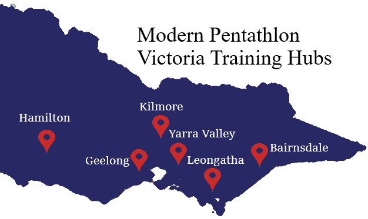
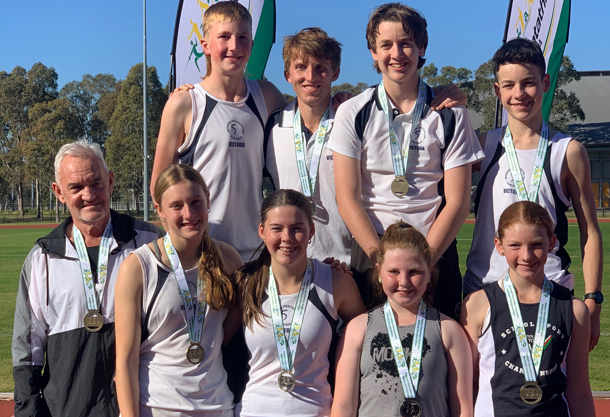

Get Started in Modern Pentathlon
Want to learn more about Modern Pentathlon and how you can train and compete? Contact a local training hub:

Upcoming 2023 Pentathlon Events:
- 21-28 Aug World Pentathlon Championships, Bath UK
- 19-20 Aug World Laser Run Championships, Bath UK
- 26-27 Aug Benalla Tetrathlon, Benalla VIC
- 29-02 Sep African/Oceania Pentathlon Championships, Cairo EG
- 25-27 Sep PCA National Victorian Ride Hub (Tetrathlon, Showjumping, Dressage), TBC
- 02-08 Oct National Pony Club Championships, Perth WA
- TBC - Oct MPV Hub Championships, Melbourne VIC
- 22 Oct Penthurst Come Try Pentathlon, Penthurst VIC
- 29 Oct Ringwood Tetrathlon, Ringwood VIC
- 01-05 Nov World Biathle and Triathle Championships, Bali ID
- 18-19 Nov MPV Triathle and Laser-Run, Geelong VIC
- 09-10 Dec PCV State Tetrathlon Championships, TBC VIC
Access information and entry forms for upcoming Pentathlon and Tetrathlon events:
Modern Pentathlon Victoria
Modern Pentathlon Victoria is the governing body for the sport of Modern Pentathlon throughout Victoria and enable athletes from around Vicotria to get involved in Modern Pentathlon.
Modern Pentathlon Victoria run come and try days for everyone to have a go. If you wish to try out the sport, or host a come and try day at your Pony Club or organisation, please contact your local hub or Modern Pentathlon Victoria.
